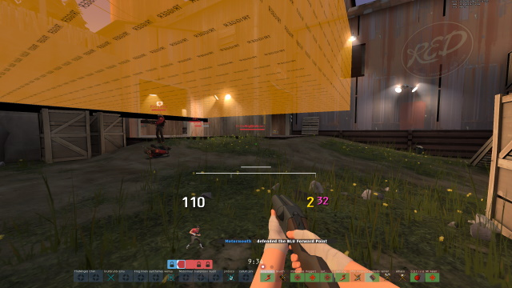

Frequently Asked Questions
Frequently Asked Questions, probably.
How do I make videos like you?
Will have to expand on this later, preferably in video form. For now, links:
- Lawena Recording Tool
- Half-Life Advanced Effects [CAUTION: Can get you VAC banned if not careful, read page for more]
- "How to Record and Make a Smooth Using Lawena and HLAE" by SynciNG
- "How to Record Your Point of View" by RGLgg
- P-REC plugin
- My WIP steam guide with my demo recording info
- PSA to demo users: since TF2 being updated like never before, even seemingly small things like map changes can affect your demo playback. Make sure to read the changelogs for map changes and keep backups of the affected map and date them to save your the trouble of trying to track down from an archive which may not exist. Go to tf/maps and save [map that's being updated].bsp, maybe don't have to save every single change, but probably good idea.
Depending on how much was changed with the map will determine how messed up the map will look.
Will eventually find out for sure if map saving was worth it in future for video-making involving demos (if old map backups will really work, it should but you never know).
Example of 2022-09 patches effects on a cp_snakewater_final1 demo from 2022-08:

How do you stay inspired to play TF2?
- Challenging game and players; not easy
- Lots of projectile-based gameplay
- Safer game to self-handicap/play non-optimally
- Can do more crazy things since your game character can respawn forever
- Doing stuff that can be aesthetically or technically cool (you will fail a lot)
- Huntsman
- Existence of TF2 community and community servers
- Players who act with basic decency in-game at a higher rate (compared to DotA2, DbD. solo player perspective)
- Rotating loadouts and playstyles regularly
- More things to be discovered (map spots, weapon combinations, ways to frag)
- Video creation
- Customizability of game (user interface (HUD), sounds, models, config scripting, etc.)
- TF2's built-in demo recording system great for filmmakers
- Playing different games or creating something non-TF2 related, taking breaks
- Gameplay is mostly solid; no pay to win affecting gameplay (perspective of a non-random crit server player)
- For fun
- Exercise for problem solving skills, strategic problem solving.
People keep saying that you don't talk. Is this true?
No. Easier for me to reply to comments on YouTube than game chat.
When did you start playing TF2?
Around January 2012 (based on my earliest achievement).
How many hours played do you have in TF2?
Current hours on my steam profile. Load times, watching demos, AFKing included. High hours not necessarily indicator of skill.
Random crits?
No.
You remind me of sketchek. Is that you?